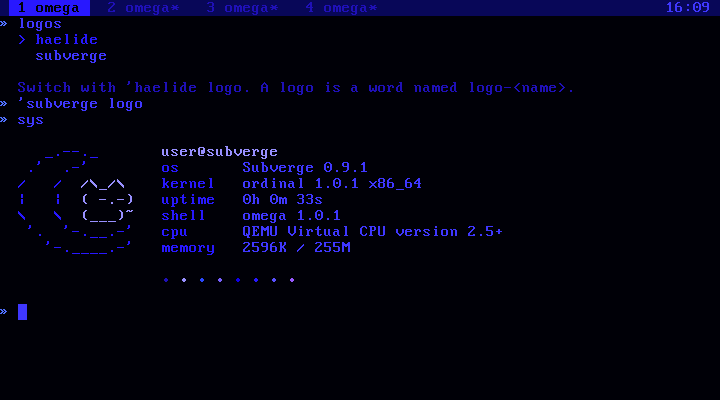
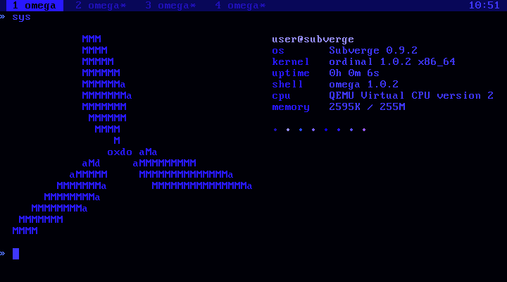

subverge
subvergeLogos
sys draws a logo on the left and the system information on the right. Two logos come with the system:
logos list the logos, with the current one marked
'haelide logo switch to the haelide logo
'subverge logo switch back to the cat and moon
logo@ say print the name of the current logo

The haelide logo is inspired by the logo of HaliadeSYS, also known as Zerene OS.

An installed system saves the logo name on the disk with the theme, and sys uses it at the next boot. The haelide theme switches to the haelide logo by itself.
Making a logo
A logo is a word named logo- followed by the logo's name. The word leaves a list of lines, and logo takes the name without the logo- part:
[ [ " .-." " (o o)" [ " | O |" " mine" ] " '~'" ] ] :logo-mine
'mine logo
sys

A line that is a string is drawn in colour 14, the accent of the theme. A line that is a list of strings is drawn piece by piece, alternating between colours 14 and 15, so [ " | O |" " mine" ] draws | O | in the accent and mine in bright text. The default logo uses this to draw the moon in one colour and the cat in the other:
'logo-subverge see
The system information starts three columns to the right of the widest line. sys draws as many rows as the logo has, and at least nine. Values that would run past the right edge of the screen are cut off, so keep logos under about 40 columns.
A backslash in a string starts an escape, so write \\ for each backslash in the drawing. "/\\_/\\" draws /\_/\.
Keeping a logo
A definition typed at the prompt belongs to the tab it was typed in. sys runs on tab 1 at boot, so a logo defined in tab 2 can't be found there. Put the logo in a root unit instead, so every tab sees it:
"mylogo" unit
opens a new unit in scrawl. Write the :logo-mine line in it, save with Ctrl-S, quit with Ctrl-Q, and then run 'mine logo.
If the saved logo is removed later, sys draws the subverge logo instead.
The rest of the sys screen
sys is an ordinary root word. 'sys open opens it in scrawl. The name before the @ is the word user, and the name after it is host, so 'user open changes them. stat prints one labelled line, and can be used to add lines of your own.